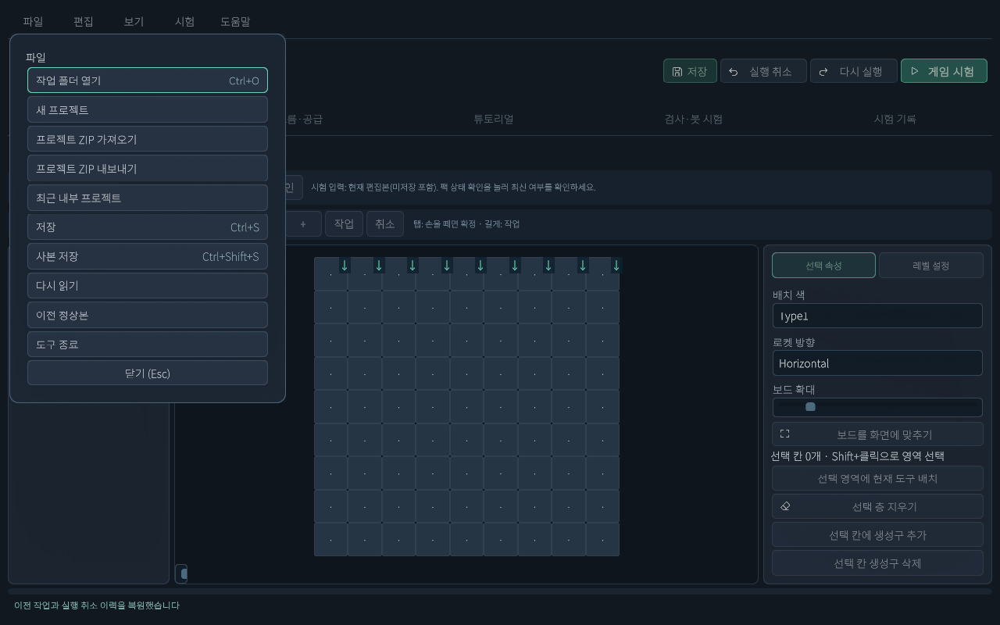
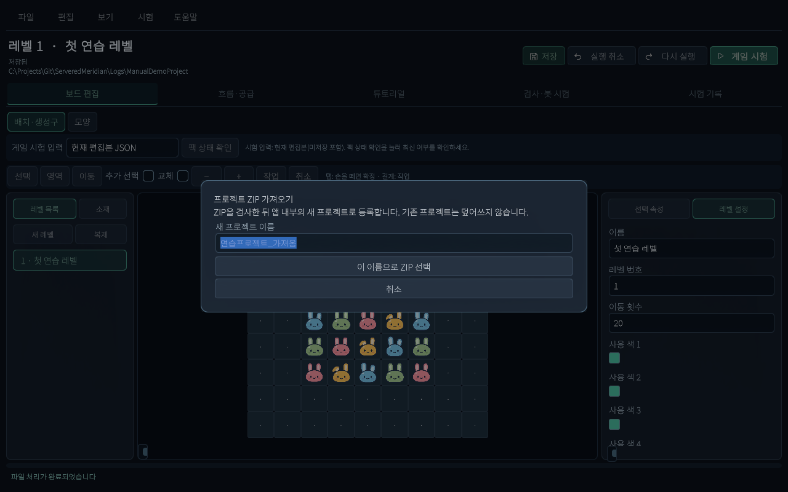

추가 · 현재 씬 기반 레벨툴
ZIP 가져오기·내보내기
PC에서 만든 레벨을 태블릿으로 옮기고 수정한 결과를 다시 가져옵니다.
기준2026.10.15 현재 UI · Windows / Android 레벨툴
무엇을 옮기나요?
추가 · 현재 프로젝트의 정상 저장된 공개 JSON 문서를 묶습니다. 선택한 레벨 하나가 아닌 프로젝트 단위입니다. Unity 프로젝트 전체, 앱, 이미지 파일, 시험 기록·복구 초안을 모두 묶는 기능은 아닙니다.
먼저 JSON 저장을 익혀 두세요. Windows ↔ Android 모두 보내는 쪽 내보내기 → ZIP 전달 → 받는 쪽 가져오기 순서입니다. 기기 사이 자동 동기화는 아닙니다.
보내는 기기: ZIP 내보내기

- 프로젝트·레벨이 맞는지 확인하고 입력을 확정합니다.
- 파일 → 프로젝트 ZIP 내보내기를 누릅니다. Android는 더보기 → 파일에서 찾습니다.
- 도구가 먼저 JSON을 저장합니다. 정상 저장 뒤 내부 저장 완료 · ZIP 저장 위치를 선택하세요. 상태에서 운영체제 파일 선택기가 열립니다.
- 저장 위치와 파일 이름을 정합니다. 예: Practice01_20261015.zip. Android는 시스템 문서 선택기에서 다운로드 폴더 등 쓸 수 있는 위치를 고릅니다. 최종 버튼 이름·모양은 기기·제공자마다 다릅니다.
- 레벨툴로 돌아와 ZIP 내보내기 완료를 확인합니다. 위치만 고른 것과 파일 쓰기 완료는 다릅니다.
- 완료한 ZIP을 USB 등 사용 중인 방법으로 받는 기기에 전달합니다. 필요하면 백업으로 남깁니다.
받는 기기: ZIP 가져오기

- 받은 ZIP을 기기에서 찾을 수 있는 위치에 둡니다. 압축을 풀지 않고 ZIP 그대로 선택합니다.
- 파일 → 프로젝트 ZIP 가져오기를 누릅니다. Android는 더보기를 먼저 엽니다.
- 새 프로젝트 이름에 “연습프로젝트_가져옴”처럼 없는 이름을 입력합니다. 내부 등록 이름이며 ZIP 파일 이름과 달라도 됩니다.
- 이 이름으로 ZIP 선택을 누르고 시스템 파일 선택기에서 받은 ZIP을 고릅니다.
- 검사를 통과하면 새 내부 프로젝트로 등록합니다. 기존 프로젝트는 덮어쓰지 않습니다. 현재 미저장 편집이 있으면 저장 후 계속 / 버리고 계속 / 취소를 선택합니다.
- 새 프로젝트가 열리면 제목·레벨 목록·배치를 확인합니다. 파일 → 최근 내부 프로젝트로 새 이름을 다시 찾을 수 있습니다.
- 현재 편집본 JSON으로 게임 시험을 합니다. ZIP 구조 검사 통과가 난이도·클리어 가능성까지 보장하지는 않습니다.
막혔을 때 확인하기
- 같은 이름이 있음: 새 이름을 정하세요. 가져오기는 덮어쓰기가 아닙니다.
- ZIP 루트에 project.json이 필요함: 일반 폴더 압축이나 단일 JSON이 아닌, 도구의 프로젝트 ZIP 내보내기로 다시 생성하세요.
- 문서 누락·추가 또는 형식 오류: ZIP에 임의 파일을 추가하지 말고 정상 저장본에서 다시 내보내세요.
- 파일 선택 후 실패: 취소 여부, 저장 공간, 제공자의 읽기·쓰기 가능 여부를 확인하세요. 접근 가능한 위치에서 재시도합니다.
- 메뉴가 비활성: 처리 완료나 시험 종료를 기다리세요. 튜토리얼 공유 사본 편집 중이면 먼저 적용하거나 버려야 파일 작업이 됩니다.
- 수정이 안 보임: 최신 ZIP인지, 다른 내부 프로젝트인지, 시험 입력이 MemoryPack인지 확인하세요.
이번에 확인한 범위
실제 캡처: 파일 메뉴·가져오기 이름 창.
공통 처리: 별도 연습 JSON 저장 → ProjectPackageStore로 ZIP 생성 → 새 폴더에 가져오기 → 다시 읽은 전체 문서 지문 일치.
코드 대조: 내보내기 선저장, 취소·실패 안내, 새 내부 프로젝트 등록.
미확인: Windows·Android 시스템 파일 선택기의 실제 사용자 조작 전체 과정. 시스템 창 이미지를 만들어 실제 캡처처럼 넣지 않았습니다.
변경 이력
| 변경일 | 변경 항목 | 이전 → 현재 | 이유 |
|---|---|---|---|
| 2026.10.15 | 현재 씬 레벨툴 안내 | 추가 · JSON·ZIP·터치 조작과 현재 화면 안내 | 현재 UI에 맞춘 초보자 설명 요청 |
설명 편집·화면 확인: 2026.10.15 · ServeredMeridian / Windows / Unity 6000.3.10f1.
Windows 씬 UI 캡처, 별도 연습 프로젝트 JSON 저장·재로드, 공통 ZIP 처리 왕복 문서 일치 확인. 모바일은 에디터에서 같은 UI를 모바일 배치로 표시했습니다. Android 실기기 터치·키보드·시스템 파일 선택과 Windows 시스템 파일 선택기 실제 조작은 이번 작업에서 확인하지 않았습니다. 브라우저 도구의 로컬 파일 접근 제한으로 넓은 화면·좁은 화면의 HTML 렌더링은 미검수입니다.